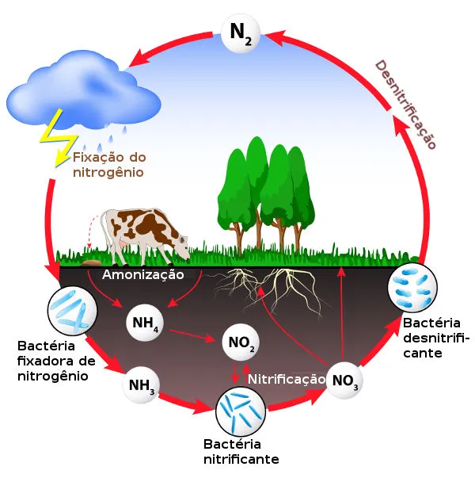
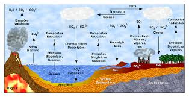

O nitrogênio é extremamente importante para os seres vivos. Está presente no ar que respiramos e na composição do nosso DNA. Além disso, também é aproveitado por plantas e bactérias, e tem papel FUNDAMENTAL na agricultura, sendo o principal elemento químico dos fertilizantes. Níveis elevados de nitrogênio atmosférico levam ao aumento da concentração de dióxido de nitrogênio (NO2) e de monóxido de dinitrôgenio(N2O).
Nos seres humanos, está presente na composição de aminoácidos e proteínas. Na natureza, é encontrado no solo e, principalmente, em vulcões. São absorvidos por bactérias, mas a queima de combustíveis fósseis contaminados com enxofre levam ao aumento da concentração de dióxido de enxofre(SO2).
O fósforo é um componente importante na sustentação dos ossos dos seres vivos. A maior parte do fósforo encontrado na natureza está presente na forma de fosfato (PO₄³⁻) e também é utilizado em fertilizantes, junto com o nitrogênio.